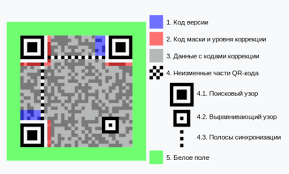

Узнайте историю создания, структуру, применение и главные правила безопасности при использовании QR-кодов. Проверьте свои знания с помощью интерактивного теста.
QR-код (Quick Response — «быстрый ответ») — это двумерный матричный код, изобретённый в 1994 году японской компанией Denso Wave для отслеживания деталей в автомобильной промышленности.
Сегодня QR-коды используются повсеместно: от оплаты товаров и услуг до идентификации личности и доступа к образовательным материалам.
Внимание: Мошенники используют QR-фишинг (quishing) для кражи личных данных. Будьте осторожны при сканировании непроверенных кодов!
Теория QR-кодов
Подробная информация о структуре, применении и безопасности QR-кодов
1. Что такое QR-код?
QR-код (Quick Response — «быстрый ответ») — это двумерный матричный код, изобретённый в 1994 году японской компанией Denso Wave для отслеживания деталей в автомобильной промышленности.
Создатель: Хосэй Масахиро Хара
Вдохновение: японские настольные игры (го, сёги)
2. Структура QR-кода

Пример QR-кода с выделенными элементами структуры
Поисковые узоры (3 квадрата по углам) — помогают сканеру определить ориентацию кода.
Выравнивающие узоры — улучшают точность считывания при искажении.
Полосы синхронизации — линии из чёрно-белых модулей для определения размера.
Код версии — указывает на версию QR-кода.
Код маски и уровня коррекции — помогает исправить ошибки при повреждении.
Данные с кодами коррекции — основная информация + резервные копии.
Белое поле — обязательная рамка для корректного сканирования.
3. Где используются QR-коды?
Оплата товаров и услуг (СБП, банковские приложения).
Транспорт: электронные билеты, посадочные талоны.
Образование: доступ к учебным материалам, видеоурокам, тестам.
Идентификация: QR-код вместо паспорта через «Госуслуги» (с 2025 года).
Логистика и торговля: отслеживание товаров, управление запасами.
Культура и туризм: информация о памятниках, экспонатах.
4. Опасности: QR-фишинг («quishing»)
Что это? Мошенники создают поддельные QR-коды, которые ведут на фишинговые сайты или загружают вредоносные программы.
Цель: кража личных данных, паролей, банковской информации.
Как защититься?
✅ Сканируйте только коды в доверенных местах.
✅ Проверяйте URL перед переходом.
❌ Не вводите данные на подозрительных сайтах.
❌ Не сканируйте коды на стикерах в общественных местах.
5. Правила безопасного использования
Проверяйте источник (музей, магазин, школа — хорошо; столб, анонимный флаер — плохо).
Смотрите на URL — если ссылка странная, не переходите.
Не передавайте личные данные после сканирования.
Используйте официальные приложения для сканирования (камера смартфона, «Госуслуги»).
Обновляйте антивирус на телефоне.
Проверьте свои знания о QR-кодах
Ответьте на 10 вопросов и узнайте, насколько хорошо вы разбираетесь в теме QR-кодов